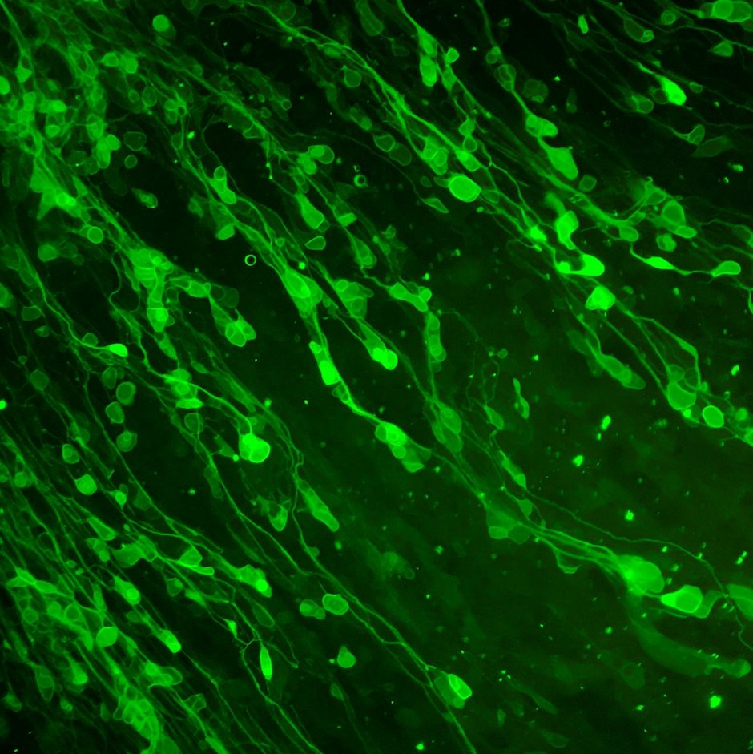

From past to present: How new neuroscience tools help us understand the brain

Like many scientific endeavours, understanding how the brain organizes behaviour can be crucially advanced by the development of technologies. Historically, neuroscientists examined brain function at the level of large brain regions or entire neurotransmitter systems. Now, neuroscientists have widely adopted new tools like optogenetics and chemogenetics, which allow brain function to be investigated with unprecedented resolution.
In this post, I reflect on how neuroscientists have been able to examine the brain with increasing specificity over time and discuss the importance of cautiously adopting new technologies in modern neuroscience.
Early neuroscience studies were largely descriptive and inferred the contribution of brain areas to behaviour by observing the behavioural deficits that followed brain damage. For example, the famous case of Henry Molaison (H.M.), a patient who had his temporal lobes excised as a treatment for his epilepsy, incidentally revealed an important role for the hippocampus in memory. More specifically, Dr. Brenda Milner at McGill University documented an impairment in memory for recent experiences in H.M. following his operation.1 Similar findings were observed by Dr. Karl Lashley when he lesioned the brains of rats after training them to navigate a maze and observed deficits in their navigation behaviour.2
While these loss-of-function studies described the necessity of certain brain areas for expressing memory, the results lacked an important level of specificity. Brain areas are complex and composed of many different types of neurons. Excising or lesioning entire brain areas fails to discriminate between these subtypes and lacks the resolution required to uncover the nuanced roles they may play in controlling behaviour.
Neuroscientists can refine their focus by using pharmacology to target specific neurotransmitter systems and study their role in behaviour. For example, Drs. Harriet de Wit and Jane Stewart from Concordia University showed that different drugs that act on similar neurotransmitter systems would produce similar effects on drug-taking responses.3 They trained rats to press a lever to earn infusions of heroin. When the heroin infusions were stopped, rats would continue to lever-press for a short while but would eventually stop.
However, when the experimenters gave the rats an unexpected infusion of morphine, another opiate that is similar to heroin, the animals would immediately begin lever-pressing even though these lever-presses did not earn them any more heroin. Interestingly, an unexpected infusion of cocaine, a different drug with stimulant properties, did not cause the rats to resume lever-pressing for heroin.
Pharmacology allows neuroscientists to study the neurotransmitter systems that underlie behaviour. Studying these systems can lead to the development of drug therapies to treat disorders in humans, but neurons have a further complexity to be understood. Neurons in one brain area can project to and release neurotransmitters onto other neurons in a completely separate brain area. Further, neurons from different brain areas can have projections that converge onto the same brain area. To add another level of complexity, these neurons can also release similar or different neurotransmitters. Thus, it is difficult if not impossible at times to delineate the contributions of different neuron projections to behaviour using pharmacology alone.
Recent tools have been developed that specifically allow neuroscientists to study the brain in a projection-specific manner. These tools called optogenetics4 and chemogenetics,5 use laser-light and synthetic chemicals, respectively, to control the activity of specific neurons and their projections. Viruses can be used to deliver the genetic instructions for the construction of light- or chemically-sensitive proteins in specific neurons. The neurons will then build and express these proteins, rendering them sensitive to activation or inhibition by light or synthetic chemicals.
One benefit of using light or synthetic chemicals to control neural activity is that they do not affect naturally occurring systems in the brain — only the systems specifically targeted by the virus are affected. To target specific projections, a virus can be delivered to a brain area where the neurons are located and laser-light or synthetic chemicals can be delivered to the location where these neurons project to.
These new tools expand the study of behaviour beyond the deficits following brain lesions, beyond the limitations of manipulating neurotransmitter levels in a particular area, to the activation or inhibition of specific neural projections during behaviour. These cutting-edge neuroscience tools are currently being used in many labs in the Centre for Studies in Behavioral Neurobiology at Concordia University to investigate the neural systems underlying addiction, learning, and motivation.6
The specificity of using light and synthetic chemicals to control neural activity assumes that these manipulations do not affect the activity of neurons other than those targeted. However, many years after the discovery of these tools, it was demonstrated that laser-light alone could cause changes in blood flow in the brain7 and that synthetic chemicals might metabolize into pharmacologically active compounds.8 Thus, the effects of these innovative tools may not be as specific as they were once assumed.
While these studies might seem alarming, scientists often control for the potential of unintended effects of their tools. Many optogenetic studies include a control group where laser-light is delivered into the brain of rats that do not express light-sensitive proteins in their neurons. Similarly, chemogenetic studies usually include a group of lab rats that do not express chemically-sensitive proteins but are administered synthetic chemicals anyway. Like all technologies, neuroscience tools undergo cycles of refinement. For example, a new synthetic ligand has been developed for chemogenetic studies that has a much lower potential for being metabolized into pharmacologically active compounds9.
Modern neuroscience tools are powerful, exciting and have allowed neuroscientists to zoom in on the brain systems that control behaviour. It can be tempting to implement new tools incautiously but when the best tools available are used in the best way possible, the results that follow can be transformative. While the excision of a person’s entire temporal lobe would likely not occur today, the careful study of the implications of this procedure generated findings that shaped our understanding of memory.
Pharmacological studies of brain function remain an important tool in neuroscience and the history of these studies guide the implementation of new neuroscience tools. It is important to use neuroscience tools carefully and to control for their potential shortcomings. The insights that arise from well-designed and controlled studies will outlive the techniques from which those insights are borne.
References:
Scoville, W. B. & Milner, B. Loss of recent memory after bilateral hippocampal lesions. J. Neurol. Neurosurg. Psychiat. 20, 11–21 (1957).
Lashley, K. In search of the engram. Symp Soc Exp Biol 4, 454–82 (1950). de Wit, H. & Stewart, J. Drug reinstatement of heroin-reinforced responding in the rat. Psychopharmacology (Berl). 79, 29–31 (1983).
Boyden, E. S., Zhang, F., Bamberg, E., Nagel, G. & Deisseroth, K. Millisecond-timescale, genetically targeted optical control of neural activity. Nat. Neurosci. 8, 1263–8 (2005).
Armbruster, B. N., Li, X., Pausch, M. H., Herlitze, S. & Roth, B. L. Evolving the lock to fit the key to create a family of G protein-coupled receptors potently activated by an inert ligand. Proc. Natl. Acad. Sci. U. S. A. 104, 5163–5168 (2007).
Villaruel, F. R. et al. Optogenetic Activation of the Infralimbic Cortex Suppresses the Return of Appetitive Pavlovian-Conditioned Responding Following Extinction. Cereb. Cortex 1–12 (2017). doi:10.1093/cercor/bhx275
Rungta, R. L., Osmanski, B.-F., Boido, D., Tanter, M. & Charpak, S. Light controls cerebral blood flow in naive animals. Nat. Commun. 8, 14191 (2017).
Gomez, J. L. et al. Chemogenetics Revealed: DREADD Occupancy and Activation Via Converted Clozapine. Science (80-. ). 357, 503–507 (2017).
Thompson, K. J. et al. Dreadd Agonist 21 (C21) Is an Effective Agonist for Muscarnic-Based Dreadds in Vitro and in Vivo. ACS Pharmacol. Transl. Sci. 21, (2018).
This content is republished from the Concordia University Public Scholars’ blog: https://www.concordia.ca/cunews/offices/vprgs/sgs/public-scholars-18/2018/08/14/from-past-to-present-how-new-neuroscience-tools-help-us-understand-the-brain.html